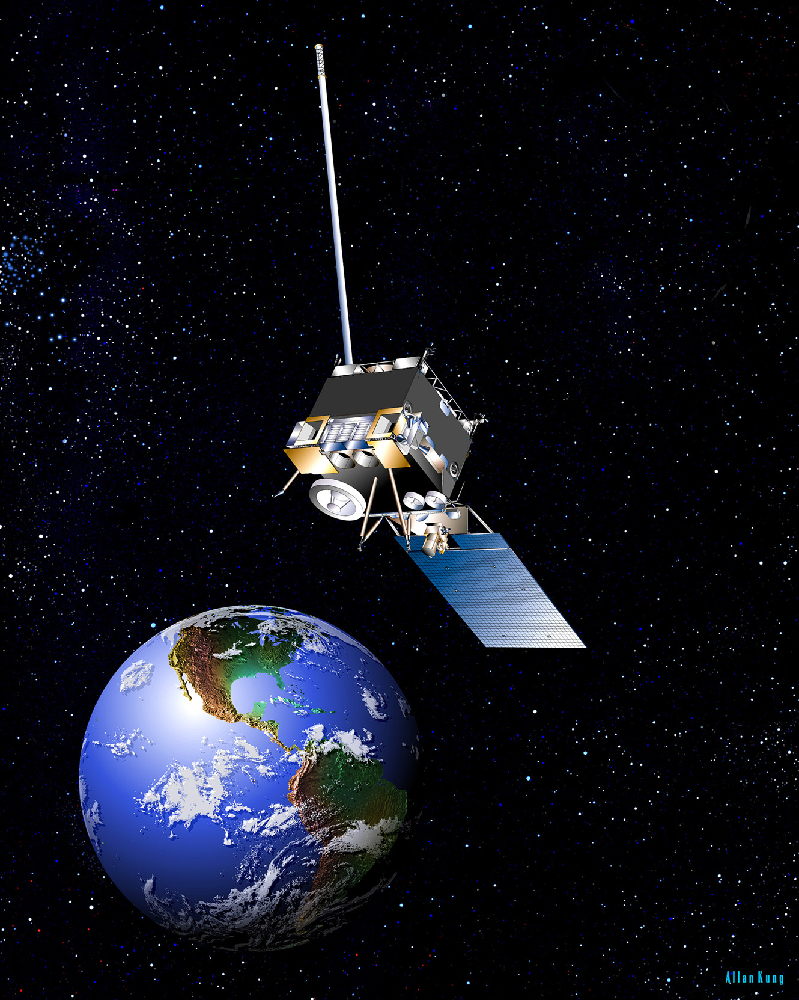
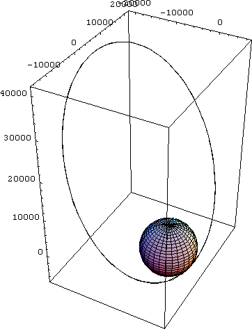
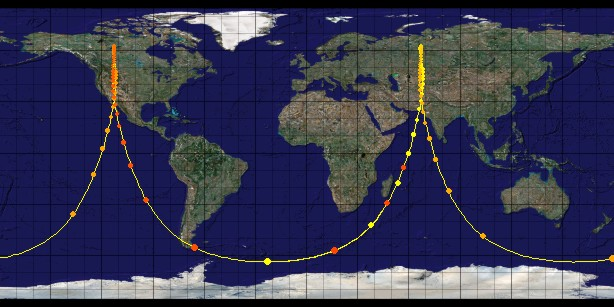

Arctic Coverage
 Figure 2.1 Artist representation of a satellite in orbit.Typically, communications satellites use a geostationary orbit to provide constant coverage over an area. Other orbit examples are low earth orbits in the case of the Iridium constellation and the Tundra orbit used for the Sirius constellation. These orbits are not an efficient method of canvasing all of Canada's arctic.
Two alternate options for high latitude coverage are the Molniya orbit and Polar orbit. Molniya orbits work well for stationary coverage in northern latitudes with wide a longitudinal area. Polar orbits are capable of providing coverage for both southern and northern latitudes with highly variable perturbation and less coverage longitudinally.
In order to canvas Canada's arctic an orbit must allow for coverage at high latitudes across a wide longitudinal area and have minimal perturbation. A satellite with a Molniya orbit would accomplish this.
Molniya Orbit
Invented in the 1960s for telecommunication satellite coverage over northern Russia, the Molniya orbit is elliptical with high inclination. Unlike their geostationary counterparts, satellites in a Molniya orbit are not stationary relative to their ground position and require the use of a constellation of multiple satellites to provide constant coverage over an area. This orbit is almost unaffected by the oblateness of the earth, which causes perturbations in the argument of perigee, and makes use of an apogee of approximately 40,000km with a low altitude perigee. Due to Kepler's laws of planetary motion, this means that satellites in a Molniya orbit spend considerably more time at their apogee than their perigee; allowing for a long period of coverage during each orbital period. This orbit's low altitude perigee provides for cheaper launch costs than typical geostationary orbit insertion.
To achieve a Molniya orbit, a satellite must have the following orbital constants:
Due to a Molniya satellite's motion around the earth, a constellation of multiple satellites is required to provide constant coverage over the north. This orbit allows for 8 hours of coverage for each day, meaning that a minimum of three satellites are required. Each satellite's Right Ascension of the Ascending Node, the angle between the vernal equinox and where the orbit crosses the equator going northward, must be separated by 120 degrees in order to form a net around the globe.
 Sample ground track of a single satellite in Molniya orbit.